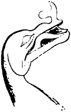

Bu olanların yanı sıra, bu on iki yılda bir adet de olmayış vardı. Hayal Taşı’yla ilgili hiçbir şey olmamıştı. Yani adının çağrıştırdığı ve onun için verilen 1000 doları haklı çıkaracak herhangi bir şey. Yoksa taşın, kayda değer olmasa da bu on iki yıl boyunca sonsuzluğa doğru akan bir tarihi vardı tabii. Taş, Argun Bey’in ofisinde yaşamaya devam ediyor, işyeri değişikliklerinde herkesle beraber göç etmeyi biliyor, kendisine verilen tek görevi bıkmadan usanmadan yapıyordu. Argun Bey, Yomut’un öldüğünü gazeteden öğrendiği günün akşamı, taşın sırrını çözmekle biraz daha ilgilenmiş, sonra taştan ümidini kesmişti. Kâğıt ağırlığı olarak kullanıyordu onu.
2004 yılının 2 Ocak Cuma günü sabah saat 6:30’da işbaşı yapan ve Argun’un odasından başlayıp temizliğe girişen lklima Hanım’ın başına gelenler olmasaydı, Hayal Taşı’na dair yazılanlar da ancak yukarıdaki paragrafa sığardı. Olmayışların tarihini yazmak hem çok zordur hem de çok kolay. Bir şeyin değeri kendisine yüklenenden, kendisinden beklenenden ibaret değil midir? Kâğıt ağırlığı olarak kullanılan bir taşın boyu bosu, cüssesi nedir? Hem sonra, masanın üzerinde bir orada bir burada dolaşan, belirli bir yeri olmayan taşın ağırlığı mı olurmuş?
Bu tür düşüncelerden yola çıkan lklima Hanım’ın toz bezi, gitti Hayal Taşı’na sataştı. Şirret bez, takıldığı taşı masanın yüzeyinde itiverdi, lklima Hanım kayan taşı yakalamak için sol eliyle çevik bir hamle yaptı. Düşüşe geçen taşı havada yakaladı. Sol elinin orta parmağı taşın deliğine geçmişti. Taş bir kez sola doğru dönerek durdu. Yumuşadı, genişledi ve derin bir nefes aldı. Yeni doğan bebeklerin aldığı ilk nefesi ebeler nasıl parmaklarının ucunda hissederse, lklima Hanım da bu nefesin farkına vardı. Korkuya kapılarak taşı parmağından çıkardı, kanlı bir ebenin suçluluk duygusuyla masaya, kâğıtların üzerine bıraktı.
Argun Bey her zamanki gibi mesai başlamadan tam on dakika önce, sekizi yirmi geçe işe geldiği zaman, lklima Hanım da her gün olduğu gibi patronun sabah kahvesini hazır etmişti. Kadın daha önceden masanın üstüne koyduğu kallavi fincana elindeki cezveden acı kahveyi dökerken gözleri sabahki suçunun kanıtına, Hayal Taşı’na takıldı ve elinin titremesine engel olamadı. Kısık, şahin bakışlı Argun Bey’im bunu atlamadı:
“Hayrola lklima Hanım ne oldu?”
“Yok, yok bir şey beyefendi... şey ben bugün işten ayrılıyorum!”
“?”
“Evet beyefendi, soyadımın Sabitaycı mıdır Gezenaycı mıdır nedir onların soyadlarına benzediğini gördüm, siz çıkarmadan kendi isteğimle ayrılıyorum...”
Yılların Argun Bey’ine dolma yutturmak kolay değildi tabii.
“Kızım saçmalama Erzurum’dan Sabetayist çıktığı nerede görülmüş? Çermikçibaşı’nın Sabetayistlerle ne ilgisi var?”
“Var beyefendi, var! Bizimkiler aslında Azerbaycan’dan göç etmiş dağ çufutlarından, sülale orada iken Hayimogulları olarak bilinirmiş...”
Argun Bey hiçbir şey söylemeksizin bilgisayarını açtı, özel kodunu kullanarak Secdata’nın dosyalarına girdi. Kısa bir araştırmadan sonra,
“lklima, biz başkasına titizlikle hizmet verirken kendimiz yaş tahtaya basar mıyız hiç? İşte, sen işe alınmadan yapılan güvenlik soruşturmasının sonuçlan: Sülalen Karakoyunlu Türkmenlerine dayanıyor ve son iki yüzyıldır Ilıca mevkiinde çermikçibaşılık yapıyorlar. Var mı bir diyeceğin?”
Yoktu. Kız boynunu büktü. Argun devam etli:
“Tabii burada geçirdiğin yılları boşuna geçirmemiş, meselenin özünü kapmışsın. Bu açıdan takdir ettim. Hizmet içi eğilim diye ben buna derim. Kendiliğinden, spontan! Geniş, gelişmeye müsait bir hayal gücün var. Gel seni Secdata’da masa başı hizmetine kaydıralım. Maaşın da artar, rahat edersin. Yalnız her sabah gelir kahvemi yaparsın. Kimse senin gibi yapamaz... Hah... hah...”
Hem yalanının yakalanması hem de bu iş yokluğunda daha iyi bir iş sözü, lklima Hanım’ı çözmeye yetti. Sabah olanları anlattı. Argun Bey gittikçe artan bir ilgiyle dinliyordu. Olayı iyice anlayabilmek için sabah ne yaptıysa aynısını yapmasını istedi kızdan, lklima çığlık çığlığa reddederek ağlamaya başladı. Argun, o zaman daha yavaş yürümesi gerektiğini anladı. Aynı soruları defalarca sorarak, toz bezinin kızın sağ elinde olduğunu, taşın sol elinin orta parmağına geçtiğini ve sola doğru sadece tek bir dönüş yaptığını öğrendi.
Vay canına. Demek ki kendisi, o görkemli sezgisi sayesinde on iki yıl önce çözümün kıyısında köşesinde dolaşmış, sonra artık nesi sayesindeyse, iyice uzaklaşmıştı. Anlaşılan taşı sol ele takmak yetmiyor, sola çevirmek de gerekiyordu. Sağ elde veya sol elde olması fark etmiyordu, şimdiye kadar hep sağa doğru dönen fırıldağın aslında sola dönmesi gerekiyordu! Son derece sevecen bir tavırla teşekkür edip Iklima’yı gönderirken sekreteri Gül Hanım’dan Tankut’u bulmasını istedi.
Yılbaşı gecesi rezaletinden sonra her an çağrılıp zılgıt, papara ve mariz mönüsünden bir şeyler seçmeyi bekleyen Tankut, çekine çekine patronunun ofisine, son birkaç yıldır kendi aralarında şakayla karışık “tapınak” dedikleri o “kutsal” mekâna girdi. Korktuğuna uğramayan, bilakis güler yüzle karşılanan Tankut beş dakika sonra Argun’dan, hiç bilmediği bir öykünün ayrıntılarını öğreniyor, öğrendikçe şaşkınlıktan şaşkınlığa düşüyordu. Araştırmacı merakıyla hemen o anda deneyi yapmalarını önerdiyse de tecrübe ve olgunluk gerçekten de önemliydi. Argun Bey, nasıl biteceği, ne getireceği belli olmayan bir deneyi güpegündüz herkesin içinde yapmanın birtakım sakıncaları olabileceğini söyledi:
“Bir düşün oğlum, Hayal Taşı bu! Ya çil çil altınları, iri iri incileri iki dakikada yığıyorsa döşemenin üstüne?”
Tankut, o saniye Argun’un enikonu korktuğunu anladı. Bunca yıldan sonra maaşı hâlâ sadaka gibiydi. Üstelik, yazarken şirketin verilerini kullandığı gerekçesiyle, kitaplarından aldığı telif ücretinin yansını Argun’a veriyor, ayrıca cicikaynanası Tugba Hanım’ın “ölsem oturmam” demesinden dolayı kendilerine bırakılan Aşiyan’daki eski ev için de çatır çatır kira ödüyordu. Şimdi hangi dağda kurt ölmüş de kayınbabası altınları, incileri kendi gözlerinin önünde ürettiriyordu Hayal Taşı’na? Saftirik bir eda takınarak:
“Ya içinden börtü böcek fırlarsa dışarı? Ya kötü ruhlar, hortlaklar, hayaletler basarsa ortalığı?”
Argun Bey bu soru üzerine, oturduğu yerde belini dikleştirdi, göğsünü ileri çıkarttı. Bu çocukta hâlâ uzun orta Anadolu gecelerinde anneannesinden dinlediği masalların etkisi vardı. Sabırlı bir Çin filozofu tonlamasıyla konuştu:
“Materyalist felsefemiz ruh diye bir şey olmadığını söylüyor, biraz inançlı ol. Ama ruh varsa görmüş oluruz. Bilim meraktır. Hayalet kendi hayalimizin bir sonucudur, hayal etmeyiz olur biter. Öyle hortlaktı zırtlaktı, ancak masallarda olur. Yok daha gövdeli bedenli bir şey çıkarsa, onun da çaresine bakarız. Bizi kim ürküttü bugüne kadar? Oğlum burada iki baş Argun’uz. Bugüne bugün hangi kuru gürültüye pabuç bıraktık? Kim gözümüzü korkutabildi? Hangi baskıdan yıldık? Halkımız için neleri göze almadık?”
“Abi, ya börtü böcek?”
Argun, “Bak it oğlu ite, bunu mahsustan soruyor. Arachnophobia’m olduğunu, örümceklerden ölesiye tırstığımı biliyor, öğrenmiş uğursuz... Yakacam o Secdata’nın çıyanlarını” diye düşündü. Aslında beklenir şeydi. Holding’te herkes, herkesin bir sırrını öğrenmek peşindeydi. Kendisi de Tankut’un doğup büyüdüğü Argundağ kasabasında “Sevinç Abla” diye büyük bir aşkı olduğunu öğrenmemiş miydi? Hatta kadının bir zamanlar okuduğu ilkokulun hademesine rüşvet olarak bir paket sigara verdirip, siyah önlüklü beyaz yakalı bir resmini edinmemiş miydi? Sevinç Özgür: Tankut’un Sabetaycı aşkı! Devam etti:
“Tankut’çum sır değil, örümceklerden korkarım, yani korkmam da, biraz tiksinirim... iiiyk... onun için, bir miktar böcek öldürücü filan edinelim. Baktın ki, çünkü ben bakamam uğursuzlara, örümcek çıkıyor, sıkıverirsin beyinlerine, hı?”
Anlaştılar.
Tankut saat 17:30’da kabarık iş çantasını yüklenmiş olarak Argun’un ofisine girdi. Argun, Gül Hanım’ı savdı. Rahatsız edilmemek için, Gül’ün oturduğu yerin kapısını içeriden kilitleyip anahtarı üstünde bıraktılar. Argun’un ofisine her biri yirmi beşer santim kalınlığında iç içe geçmiş iki kapıdan giriliyordu. Bunları, ne olur ne olmaz diye kilitlemediler. Yalnızca ses geçmesin düşüncesiyle sıkıca kapadılar. Tankut, kahve sehpasının üzerindeki ıvır zıvırı kaldırdı. Çantasındaki cephaneliği boşaltmaya başladı. Dört ayrı marka böcek öldürücü. Argun’u gülümseten bir mini Kuran, iki adet enam-ı şerif, boy boy mutfak bıçakları, tornavidalar, kerpetenler, sıfır numara metal zımparası, bir direksiyon kilidi, bir adet demir kesme makası ve... vee bir adet de hayvan gibi tabanca! Allah Allah, Tankut’un bu yönü de mi varmış?
“Ulan bu ne?”
“Abi, güvenlikten aldım. ‘Bir namus meselesi’ deyince kaşını bile kaldırmadan verdi bizim Rüstem. Seviyorum abi bu milleti.”
Argun Bey, onaylamadığı bir şey olduğu zamanlar yaptığı gibi başını önce hafifçe soldan sağa doğru, sonra geri eski haline çevirdi.
Beş dakika sonra, on iki koca yıl boyunca heyecanla beklenen fakat bundan haberi olmayan büyük an gelmişti. Argun, Hayal Taşı’nı sol elinin orta parmağına taktı, işaret parmağının sert bir darbesiyle bir kez sola doğru döndürdü. Sabah, henüz doğarken masanın üzerinde terk edilen zavallı varlık, bir yerlerde yeniden derin bir nefes aldı. Argun bu nefesi tüm varlığında hissetti. İrkildi ama taşı döndürmeye devam etti, ünce yavaş, sonra daha hızlı döndürdü.
Pek bir şey olmadığını düşünüyordu ki gözleri Tankut’a takıldı. Beriki konuşamıyordu bile. Parmağı ile kapının hemen önünü işaret ediyordu. Kendisi taşla ilgilendiği için o tarafa bakmamıştı. Evet, kapının önünde, ofisinin bütün tabanını kaplayan turuncu damarlı siyah oniks taşların üzerinde, belli belirsiz bir hareket, bir dalgalanma vardı. O cisim de galiba siyah olduğu için, pek seçilemiyordu. Biraz sonra kabarıp yükselmeye devam ettiği için seçilmeye başladı. Her ikisi de iyice görebilmek için birkaç adım yaklaştı ve sonra geri kaçtılar.
Cisim denemeyecek kadar şekilsiz, oynak, hareketli, adeta kıyıya vurmuş petrol artığı gibi, pelte gibi bir şey. Şeyin sanki iki ucu birbirine küskün gibiydi. Her iki uç sırtını diğerine dönmüş aksi yöne gidiyor, pelte ortasından inceliyor, inceliyordu. Pelte biraz sonra inceldiği yerden koptu. Birbirinden uzaklaşmayı sürdüren, açılan, sonra elli santim kadar bir mesafede duran ve yukarı doğru büyümelerini, evet, nesneler gittikçe kabarıyordu, sürdüren iki şey. Birden kara veya karamsı vişne çürüğü, adeta dalağa benzeyen peltelerin her birinin Argun ve Tankut’a dönük alt taraflarından, altışar adet irice beyaz tırnak, daha doğrusu –kuş pençelerini andırdıkları için– cırnak dışarı doğru fırladı. Küçük çatlamalar ve çıtırtılar duyuldu. Bütün ofisi hafif bir sülfür kokusu kapladı.
Bu kadarı Tankut için fazlaydı. Böcek öldürücü tüplerden birini kaptı. Şekillenen nesneler her neyse onlara böcek muamelesi yapmaya karar vermişti. Yerlerde sürünen bu iki biçimsiz ayağa, evet, gittikçe ayağa benziyorlardı, kurşun sıkamazdı ya. İki adımda kapının önüne ulaştı. Tiksinerek ilacı sıkmaya başladı. Tüm katı kaplayan boğuk, boğazdan gelen, canhıraş, ne çığlığı olduğu belli olmayan bir çığlık koptu bir yerlerden. Sürekli bir hal aldı. Sanki biri yüksek sesle gargara yapıyordu.
Her ikisinin de damarlarındaki kan ağırlaştı. Tankut’unki dondu. Eğer kulakları kendisini yanıltmıyorsa, çığlık ayaklar hizasından değil, çok daha yüksek bir noktadan gelmişti. Tankut olduğu yere çakılmış gibi kalmıştı. Karşısında biçimlenmeyi sürdüren ayaklar sanki kendi ayakları idi. Çarmıhtaki bir beden ne kadar özgürse ancak o kadar özgürdü. Uykusunda koşmak isteyen birinin ayaklarını kaldırması ne güçtür! Büyük bir irade gücüyle ayaklarını yerden kopardı, elindeki tüpü fırlatarak sehpaya koştu. Rüstem’in tabancasını aldı. Masasının arkasına sığınan Argun’un yanına ulaştı.
Argun Bey tüm tüyleri ürpermiş bir halde parmağındaki taşı çıkarmaya çalışıyor, başarılı olamıyordu. Taşın takılı olduğu parmağı şişmiş, taşı bırakmıyordu. Ya da Argun Beye öyle geldi. Taşın da çıkarılma korkusu ile kasıldığını, deliğin daraldığını, parmağını bırakmadığını düşünseydi, taştaki sıcaklığın kendi vücudundan kaynaklanmadığını anlasaydı daha çok dehşete kapılırdı. Düşünmedi, anlamadı. İğrenç taş sıkışmıştı, çıkmıyordu. Ah biraz sabun olaydı ya da bir miktar krem... Yoktu. Parmağına tükürerek taşı yerinden oynatmaya çalıştı. Yüzüne tükürüldügü için utanan taş daha çok içine kapandı. Afaki’nin orta parmağı artık mosmor olmuştu.
Tankut yardım etmeye çalıştı. Taşın veya ne karın ağrısıysa onun rengi ve dokusu değişmiş, lacivertten kara-kızıl bir kahveye ve parlaklıktan matlığa dönmüştü. Son bir çaba ile yeniden büktü taşı. Argun acı acı bağırdı. Bükülen onun parmağı olmuştu. Taş, yerinden bir milim olsun oynamamıştı. Korkuların en büyüğü zihnini yıldırım hızıyla istila ederken Tankut anladı ki bir derisi vardı artık taşın. Bükme eylemi sırasında taşın yüzeyini kaplayan bu kalınca, yağlı ve yumuşak deri Tankut’un güçlü parmakları altında hareket etmiş, oynamış, kıvrılmış fakat koruduğu nesnenin sert, kaslı dokusu olduğu yerde kalmıştı. Tankut’un, omurilik soğanından kuyruk sokumuna kadar tüm omurgası titredi, İrkiltiler içinde “taşı” bıraktı. Fısıldayarak “canlı, canlandı bu şey” diyebildi.
Her iki Argun, iki koca yiğit, nice zorlu vuruşmadan güleç ve umursamaz çehreleri ile çıkan bu iki tınmaz, bu iki kaygısız bahadır, çığlık çığlığa, yuvalarından yere düşmüş, gözü açılmadık, çıplak sığırcık yavruları gibi bağrıştılar. “İmdat” çığlıkları, dışarıya ses geçirmemesi için yarım metre kalınlığında cam elyafıyla yalıtılmış alçıpan kaplı duvarlarda boğuldu kaldı. Argun, Secdata’nın akıllı elemanlarının aklına ağız dolusu küfretti.
Yok, Allah’ın belası “yaratık” çıkmıyordu. Yeni bir çatlama sesi duyduklarında, kan ter içindeki alınlarını kaldırarak kapıya doğru baktılar. Orada artık birbirinden ayrık duran iki adet kalın baldır vardı. Bir saksıya dikilmiş çiçek misali, baldırların ortasından çıkarak yukarı doğru uzamasını bekledikleri kemikler ise olmaları gereken yerde mevcut değildi.
Tankut bir an bile düşünmeksizin kahve sehpasına vardı. Rüstem’in tabancasını kaptı. Baldırlara beş metre kalıncaya kadar yaklaştı. Sekiz kurşunu birden baldırların epeyce yükseğinde değişik noktalara boşalttı. Erimiş bir metal kazanma yeni metaller atılınca ne olursa o oldu. Tuhaf, ağır, yapışkan şıpırtılar işitti. Kurşunlardan biri hariç hepsi hedefini bulmuştu. O tek kurşun ise ahşap kaplamalı çelik kapıya ulaştı, büyücek bir tahta parçası, bir sürü kıymık kopardı ve oradan ofisin başka bir noktasına sekti, bir santim kalınlığındaki alçıpanı deldi, duvarın bir noktasına gömüldü kaldı.
Zavallı silahşor yiğit tekrar kahve sehpasına koştu, en büyük bıçağı aldı, iki sıçrayışta Argun’un yanına döndü. Boğuk bir sesle konuştu:
“Abi müsaade edersen orta parmağını keseceğim. Başka çaresi yok.”
Çağrılanı defetmek için çağıranı ortadan kaldırmanın da bir yol olduğunu, seyrettiği filmlerden, okuduğu kitaplardan vesaire pek iyi bilen Argun Bey daha fazlasına hazırlamıştı kendini. Tankut’un şefkati gözlerini yaşarttı. Artık üzerinde sert, kısa, san-kızıl tüyler olan taşa bir bakış gönderdi.
“Evladım, işe yararsa feda olsun bir parmak da... istersen biraz bekleyelim” dedi.
Doğruydu, henüz ortalıkta bir şey yoktu. Nihayetinde kapının önünde kimin olduğu bile bilinmeyen iki bacak vardı. Sakinleştiler. Tankut biraz utandı. Ataklık yapmış, hiç görmediği bir varlığa saldırmış, ateş etmişti. Korka korka galiba Argun’un parmağıyla artık bir olmuş şeyi okşadı. Sevgi de bir yoldu. Parmakları bir hayvana, bir keçi veya antiloba dokunuyor gibiydi. Bu kısa tüylerin aslan veya puma gibi yırtıcı bir canlıya ait olma olasılığını zihninde arka plana itli.
Çeyrek saat kadar gözlerini, gözlerinin önünde biçimlenen varlığa dikerek beklediler. Çıplaktı yaratık. Tankut bunu yaratığın penisi olması gereken organ ortaya çıktığında anladı. Aslında bedeninin daha aşağısında da bir giysisi yoktu ama ancak penisi görününce yaratığın çıplak olduğunu düşünmüştü. Birkaç santim kalınlığında, on santim kadar boyu olan fakat spiral biçiminde idi bu organ. İçinden gayri ihtiyari bir “oha” çekerek gülümsedi. Demek yaratık erkekti.
Tamamen başka nedenlerle de olsa, Argun Bey de yaratığın çıplak olduğunu düşünmekteydi. Dikkatli bakışları yaratığın derisi olmadığını yakalamıştı. Vücudunu bir ağ gibi saran renk renk tüm damarlar açıkça görülebiliyordu. Ayrıca yaratığın boyu büyüdükçe, siyahımsı, bordomsu rengi açılıyor, gittikçe kızıllaşıyor, bu kızıllık bazı yerlerde çok hafif kahverengiye dönüşüyor, bazı noktalarda ise parlak sarı bir hal alıyordu. Derin inlemeler, küçük boğuk çığlıklar duyuyor gibiydiler. Argun elinde olmaksızın düşündü: Sanki önce içorganlar oluşuyor, yaratık içten dışa doğru büyüyüp, genişliyor, bir yandan da boyu uzuyordu. Derisinin oluşması da an meselesiydi herhalde. Süreç bunu gerektiriyordu. Her şey dalak gibi bir pelteden başlamamış mıydı?
Bu düşüncelerini damadına söyledi. Şimdi daha dikkatle bakıyorlardı. Yaratığın karın boşluğuna sıra gelmişti. Belinden kesik yarım bir gövdenin oluşturduğu oval platformun üstünde bazıları patatese veya kanserli tümörlere, bazıları kalın sarılmış kokoreçe benzeyen irili, ufaklı yumrular gördüler. Bunlar nereye gideceklerini bilen kör mağara hayvanları gibi hareket ediyor, kendilerini birer noktaya yerleştiriyorlardı.
Sonra, kaynayan bir reçelin üzerinin köpüklenmesi gibi bir gelişme oldu. Bu köpüğümsü doku sertleşmeye başladı. Yaratığın karın boşluğu kapanıyordu, yumrular görünmez olmuştu. Kızıl-sarı, yer yer turuncu bir kabuk oluşmaya başladı. Yaratığın karnında, göbeği olması gereken ve galiba adam gibi kesilmediği için dışarıya doğru fırlamış birkaç santimlik bir uzantının, bir meme ucu gibi sarkan yerin etrafında kabuk iyice kahverengileşmişti. Sonra bu kahverengi bölge bir çıtırtı veya cızırtı çıkararak çatladı. Altından sapsan bir renk göründü. Bu sefer pek açık duydular. Keskin bir çığlık kulaklarını tırmaladı.
İki dehşete düşmüş adam birbirine baktı. Nedendir bilinmez, daha önce düşünmemişlerdi ama tanık oldukları görüntü yavaş yavaş soğuyan bir lav kütlesine benziyordu. Bu görüntüye bakılırsa binlerce derece sıcaklık yayması, etrafını yakıp kavurması gereken bir lav kütlesi. Ama bu dönüşüm, bu kalıplanış, bu cisim bulma hadisesi hiç de öylesi bir ısı yaymıyordu. Üşüdükleri bile söylenebilirdi.
Yaratığın göğüs kafesi yavaş yavaş oluşur, dört adet akciğer ve üç adet yürek olması gereken organı sarıp kuşatırken, uylukları hizasında bir yerden bir kibrit kutusu büyüklüğündeki kahverengi-siyah kabuğun önce kıvrıldığını, sonra yere düştüğünü gördüler. Yaratık acı acı uludu. Sürecin başından beri ilk kez hareket etti. Bilinçli bir hareket miydi bu bilemediler ama yaratığın ayaklarından biri sağa doğru bir adım attı. Bunu yaparken havaya kalktı ve yere düşen kabuğun üstüne basarak onu çıtır çıtır kırdı. Sonra adımını geriye, daha önceki konumuna aldığı zaman kabuğun yerinde yeller estiğini gördüler.
“Canavarın kafasının oluşması gerçekten görülmemeye değerdi. İçinde bir sürü borunun göründüğü “kesik” boynunun ortalarında bir yerde, binlerce gözeneği olan kızıl bir süngere benzeyen beyni şekilleniyor, kafa olacak yere doğru biraz yukarı çıkıyor, kafatasının arkasını oluşturmaya başlayan kabuksu çeperin iç yüzeyine arsızca yapışıyordu.
Bu kafatası üstten kapanmaya, arkadan öne doğru aşağı inmeye başladı. Alnı oluşturduktan sonra gözlerin olması gereken yerde iki koca delik bırakarak burnu oluşturmaya girişti. Bu iki delikten yarısı dolu kafanın içi görünüyor, insan orada belli belirsiz bir hareketin farkına varıyordu. Birden boynun henüz kapanmayan ön tarafından iki alaca renkli top yukarı doğru fırlayarak kendileri için hazırlanmış göz çukurlarına yerleşti. Canavarın akları yerine lacivert tonun hâkim olduğu gözleri turuncuya çalan kızılımsı bir renkteydi. İri iri açılmış bu tuhaf gözler kendilerini seyredenleri seyretmeye başladığında, mahlukun burun delikleri yeni oluşuyordu. Boynun ön kısmında ancak bir avuçluk bir yer kalmış, orası da hızla çoğalan dişlerle dolmaktaydı. Bunlar yavaş yavaş kuruyup dudaklaşan ve enine bir çizgi yapacak biçimde çatlayan iri bir ağza kendilerini yerleştirdiler. Galiba yaratığın çenesine pek fazla bir “deri” kalmamış olsa gerekti ki, neredeyse bütünüyle ortaya çıkan yüz, o alına, o iri şahin burna ve o delici iri gözlere hiç yakışmayan minik, geriye çekik, sivri bir çene ile tamamlandı. Ofisteki sülfür kokusu dayanılmaz bir hale geldi. Nefes almak başlı başına bir iş oldu.
Yaratık yapışık dudaklarını birbirinden güçlükle ayırdı. Ağzından dışarı sarı bir lav parçası fırladı. Bu iki dudak sessizce oynamayı sürdürürken “yenigelen”in kolları henüz gelişmemişti. Argun ve Tankut ne kadar dikkatli bakarlarsa baksınlar omuzlardan çıkan kemiğe benzer bir şeyi yine göremediler. Bir alay kas, damar, sinir karışık bir halde yenigelenin her iki omzundan birden aşağı, yere doğru salkım saçak sarkıyordu. Bunların da kabuklaşan bir doku tarafından sarılması, kolların ve ellerin oluşması çok uzun sürmedi. Canavar öne doğru eğilerek sanki karşısındakileri selamlamak istedi. Oldukça büyük bir çatırtı işittiler. Sırt bölgesinden büyük bir kabuğun yere düştüğünü gördüler. Dilsiz mahlukun gırtlaktan attığı çığlık ikisini de iliklerine kadar ürpertti. Yaratık, yine ayağı ile üstüne basarak bu kabuğu da içine aldı.
Dimli, Hertevin ve Şikaki’yi zaten sular seller gibi konuşan ve bir zamanlar kendine verdiği sözü tutarak yıllardır Aramice ve İbranice çalışan Argun Afaki, o uzun ansiklopedi yıllarını gerçekten de boşa geçilmemişti. Yalnız dil çalışmakla kalmamış, cifir, ebced ve kabalanın derinliklerine dalmış, Bereşit Tora aşamalarını çabucak atlamış, dünyada pek az kişinin anlayabileceği Atzilut Tora’nın hacimlice kısımlarını anlar olmuştu. Başka bir deyişle Tora’nın zahirî değil batini, dış değil iç manalarını anlamaya başlamış, Tora’nın okuyabilen herkese açık olan Bereşit versiyonu değil, ancak mistik sezgisi pek güçlü zahitlere ayan olan Atzilut, yani Tecelli versiyonu üzerine kafa yorar olmuştu.
O sırada herhangi bir kaynağa ulaşacak durumda olmamasına rağmen gördükleri onda birtakım düşünceleri ayaklandırmıştı. Rüyada gibi sayıkladı:
“Klipa, Tankut evladım, bunlar klipa, klipaların dökülmesine şahit oluyoruz.”
Cehaleti öyle basit, temiz bir cehalet olmayıp eskilerin deyimiyle “cehl-i mürekkep” olan, yani ne bilmediğini de bilmeyen Tankut yine de geri kalmamak ve bilgi sergilemek sevdasıyla:
“Yani bir beria hadisesi ile mi karşı karşıyayız abi? Malum beria, İbranice yaratılış demektir, neyse geçelim...” demiş, Argun Afaki’nin sert bir bakışı ile susmuştu.
Argun Bey yeni bir yoruma davetiye çıkarmamak için bu kez içinden düşündü. Tanrı evreni yaratırken kendinden bağımsız bir zekânın da olmasını istemiş, nurunu, ışığını maddenin içinden geçirmiş, madde bu ışığın ağırlığını taşıyamadığından feryat etmeye başlamış, parça parça kırılmış, umduğunu bulamayan ışık, tecelli ettiği kaynağına doğru yola çıkmış, fakat bazı ışrak tanecikleri maddeye yapışarak kalmıştı. Sıvışıp kaçmaya çalışan ışık, fırsatını bulunca maddeyi ergitiyordu. Madde ise yüzeyinde kabuklaşmalar oluşturarak bu sıvılaşmayı önlemeye, hiç olmazsa kabuğunun içine hapsetmeye çalışıyordu.
İşte bu kabuklara “klipa” deniyordu. Bu kabukların içine hapsolan gücün ilk kaynağına dönebilmesi için bir Maşiah veya Mesih’in varlığına ihtiyaç vardı. Ancak o zaman maddeye yapışarak geride kalan ışık zerrecikleri yolculuklarını tamamlayacak, ancak o zaman “Tikkun” denen restorasyon olayı gerçekleşecek, kıyametten sonraki Altın Çağ başlayacaktı.
Ancak madde bu gücü bırakmamak için direniyor, acısına rağmen güçten ayrılmak istemiyordu. Güç, yaşam demekti. Madde ölmek istemiyordu. Meseleye nur açısından değil, madde açısından baksa bile ünlü fizikçi Stephen Hawking de benzer bir yaklaşıma sahipti. O da çekim güçleri ile ışığı bile zapt edip bırakmayan karadeliklerden bazı şeylerin, milyarlarca yıl sonra bile olsa kurtulabileceğini düşünüyordu.
Derin düşüncelere dalan Argun Afaki şimdi gözlerinin önünde şekillenen yaratığın Mesih mi yoksa Mesih’in gelmesi için bir ön şart olan Deccal mi olduğunu bilemiyordu tabii. Bir ihtimal, Mesih başkası, mesela kendisi idi. O zaman da bu canavarla boğuşmak, pençeleşmek zorunda kalacaktı. İbranicesini kitabilikten kurtarıp sormak, öğrenmek isterdi.
Bu aşamada yaratığın konuşamadığını henüz bilmiyordu. Evet, yaratık konuşamıyordu. Ama bu adım atamaz demek değildi. Eylemsizliğini yenmiş madde, iki metrelik kaslı ve ağır vücudunu çıtırdata çıtırdata, kabuklarını döke döke, döktüğü kabuklarını tekrar eritip vücuduna ala ala, irili ufaklı çığlıklar, boğulma sesleri ve hırıltılar çıkara çıkara kahve sehpasına doğru yavaşça ilerledi.
Galiba yedi parmaklı pençesi ile, Tankut’un artık ne düşündüyse getirdiği büyük boy bir yıldız tornavidayı aldı, izleyicilerine yöneldi. Böyle güçlü bir canavarın basit bir tornavidadan medet umması Argun Afaki’ye pek komik geldi. İster istemez “daha önceki hayatında tamirci çırağı mıydı acaba” diye düşündü. Sehpadan, niye orada olduğu belli olmayan direksiyon kilidini kapsaydı “taksici” diyecekti.
Otuz saniye sonra, yaratıkla aralarında yalnızca Argun’un, büyük, geniş, masif abanoz masası kalmıştı. Yaratık tam karşılarına geldiğinde Tankut, Argun’u şaşırtan bir şey yaptı. O da anlaşılan gizli bir fantezi film düşkünüydü.
“Yaratık! Buraya bak! Bak ve kurtul, efendini dinle, sana sihirli sözcüğü söylüyorum: Nejat, Neejat, Nejat! Bunun kurtuluş demek olduğunu anla, diz çök...”
Argun Afaki, o halde bile damadının saflığına şaştı. Evet, Nejat evrensel bir isimdi, İran’da casuslukla suçlanan her on Yahudiden biri Nejat adını taşırdı. Bu doğruydu. Ama nereden çıkarmıştı sihirli sözcüğün Nejat olduğunu? Aklının kıyıcığında bir yerlerde “Ger dilesiz bulasız oddan necat” gibi bir tekke ilahisi mi kalmıştı? Derin bir nefes aldı, pek vakitleri kalmışa benzemiyordu, kendi formülünü denedi.
“Ey atik yomin, ey kadim-ül eyyam, ey günlerin eskisi, seni çağıran, asıl efendin benim... Gözlerime bak, sahibini tanı, itaat et!”
Yaratık, her ikisine de tepeden bakan boyunu biraz kısaltmak için eğildi. Yine bir “klipa” düştü. Yine bir hırıltı çıkardı. Ağzını açtı. Üç sıra halinde dizilmiş, keskin, testere dişlerine benzeyen beyaz dişleri ve sapsarı bir akkor halindeki küçükdili göründü. Yaratığın sol pençesi, daha doğrusu, orta boğumunda tuhaf bir delik olan işaret parmağı yukarı kalktı, kendine çevrildi, ağzının içini gösterdi.
Bu hareketi yaparken canavarın sol pazısı bir vücutçuyu utandıracak kadar şişmiş, şişen magma üzerinden irili ufaklı onlarca kabuğu yere dökmüştü. Bunların kıvrılarak düşmek üzere olan en irisini yakalayan yaratık, klipayı ağzına attı. Çıtırdatarak yedi. İrkilen Argunlar masanın arkasında biraz daha geri çekildiler. Tankut,
“Tüh ulan Allah belanı versin şerefsiz! Cenabet yamyam!” diyerek yaratığa tükürdü. Zavallı mahluk “ehgghhh” olarak yorumlanabilecek bir çığlık attı.
Yaratık sonra, elindeki tornavidayı havaya kaldırdı, kendine, karnına doğru çevirdi ve sanki zahmetli bir harakiri yapar gibi iri göbeğine birtakım “kesikler” yapmaya başladı. Vücudunun en kahverengi, neredeyse siyah olan bu bölgesindeki klipa çatlayarak sağa sola doğru açıldı, altından berrak sarı bir sıvı çıktı. Tankut hiçbir şey anlamasa da Argun Bey, hızla tekrar kabuklaşmakta olan bu kargacık burgacık sarı işaretleri heceledi:
“La–şo–ni”
Tankut, o anda yaratığın acılı yüzünde bir gülümseme gördüğüne yemin edebilirdi.
Yaratık ikisinin de şaşkın bakıştan arasında Argun Bey’in sol elini tuttu. İşaret parmağını, Argun’un orta parmağındaki “Hayal Taşı’na” dayadı. Hiçbir şey göremediler. Yalnız yere düşen yıldız tornavidanın çıkardığı sesi duydular. Yaratık göz açıp kapayıncaya kadar kaybolmuştu. Nedense, çok uzaklara gitmediğini, boyut değiştirerek yakınlarda bir yerde, belki de bulundukları odada kaldığını düşündüler.
Argun, çelik ucunun yarısı eriyerek yok olmuş tornavidayı yerden kaldırdı:
“Laşon, dil demek... Tabii ki İbranice... Laşoni, dilim, belki de lisanım anlamına geliyor... Orasına bakmak gerek. Tankut... Oğlum, bu yaratık dilsiz, konuşamıyor... Onu söylemek istedi. Aman Tanrım... nasıl anlamadık... Gösterdi de: Ağzının içinde yalnızca küçükdili vardı!”
Deccal veya Mesih, konuşamayan bir yaratığı çağırmışlardı. Böyle her seferinde iki saat uğraşıp tek kelime öğrenerek ne olurdu ki? Kadere bak! “İllallah şu subaltern’lerden! Bunun da öyküsünü yine biz mi yazacağız?” diye düşündü Argun Bey.
Nice sonra, acayip bir vaziyette dakikalarca durmaktan dolayı tutulan, sızım sızım sızlayan sol elinin parmaklarına baktı. Parlak, kaygan, sert ve soğuk lapis lazuliden mamul Hayal Taşı’nı, ilk alındığı günkü görkemi içinde gördü. Kolayca çıkardı. Masanın üstüne koydu. İşaret ve yüzük parmaklarında hâlâ taşın ya da neyse onun bıraktığı izler vardı. Birkaç tane de boz-sarı renkli tüy. Bunların ne kadar değerli olabileceğini bir an bile düşünmeden parmaklarına üfledi. Tüylerden biri uçtu, gitti; Tankut’un metal saat kayışına saplandı kaldı.
Argun’un saat gibi çalışan hafızası birden yıllar öncesine, taşı aldığı ilk güne gitti. Aceleyle taşı çevirdi. Evet, o hatırladığı küçük kırık, uçlardan birinde hâlâ açıkça görülebiliyordu. Elini yavaşça kırığa değdirdi. Yalnız görülmekle kalmıyor, keskinliğini de hâlâ koruyordu kırık. İnsan dikkat etmezse parmağını kesebilirdi pekâlâ. “Pek sivri dilli bir şey olsa gerek bizim iblis” diye düşündü Argun Bey.
Meselenin yansını çözmüştü: Taşın kopan ve yiten parçası yaratığın diliydi. O kadar organ içinde dili, tesadüfe bak! Şu kıvrık çükü yok olaydı, kime ne ziyanı olurdu? Peki neredeydi bu yitmiş gitmiş taş parçası bakalım? İnsan kepçe olsa evren de kazan, bu “kırık dili” nerede bulurdu ki? Minicik, lacivert bir üçgen taş! Bir eşkenar üçgen, iki milimlik kenarları var. Büyük taşa bakınca görülüyor. Tek parça halinde kopmuş, adeta bir üçgen prizma, minik sevimli bir piramit. Ex post facto! Bunları söylemek kolay da nerede bu parça? “Bırak teoriyi de kırık taşı bul be adam” diye aşikâr söylendi.
Tankut da halli halince, karınca kararınca aynı soruyla; bilgiye nasıl ulaşılacağı sorunuyla pençeleşiyor olmalıydı ki,
“Abi, bize lapis lazuli taş mı yok? Göndereyim Kapalıçarşı’ya birini, Afgan işi birkaç yüzük filan kapsın gelsin. Sonra oturur, istediğimiz şekilde keser, Hayal Taşına yapıştırırız. Kim farkına varacak ki abi?” şeklinde bir öneride bulundu. Kes yapıştır işlerinde gerçek bir uzman olan damadına Argun Bey, ters ters baktı:
“Haklısın Tankut, ben de şimdi senin kulağından bir parça alayım diyorum. Artık tıp ilerledi, sana herhangi bir eşekten kulak nakli yaparlar...”
Tankut’un masaya bıraktığı koca bıçağı tehditkâr bir tavırla elinde sallamaktaydı. Tankut yine sustu. Kabuğuna çekildi. Evet, öyle çatlayıp dökülmüyordu ama her canlı gibi onun da bir kabuğu vardı. Bir on dakika sonra Argun’un keskin zekâsı meselenin kalan yansını da çözdü. Taşın parçasının nerede olduğunu bulmuştu. Yani fiilen değilse de, kırık parçayı ele geçirmese de, keşfedilmeyi bekleyen bir kıtayı teorik olarak bulur gibi bulmuştu. Şimdi o kıtaya gidecek gözleri keskin, koku alma duyusu küt, korkusuz bir denizciye gerek vardı.
Koltuğuna oturdu. Yüzüne geniş bir gülümseme yayıldı. Hayal Taşı’nı okşayarak:
“Oğlum Tankut, taşın ucunun nerede olduğunu biliyorum. Ama almak sana kalmış!” dedi.
Taşın kırık parçası Çiçek Hanım'daydı. Daha doğrusu o zavallının vazo olarak kullandığı Dağıstan işi bakır sürahinin içinde. Taş en başta sürahinin içinde değil miydi, Argun sürahiyi alıp Tankut’a vermemiş miydi? O da Çiçek’e nişanlanma armağanı olarak vermemiş miydi? Tankut da biraz düşününce, salladıkça sürahinin içinden gelen minik çan seslerini hatırladı. Korkusundan bir şey demedi. Ya taşın parçası sağa sola çarpmaktan dolayı bir kez daha parçalanmışsa? Çatal dilli bir yaratığın konuştuklarını kim anlardı ki? Adamın isterse üç yüreği olsun da dili çatal olmasın! Hiç sesini çıkarmadı. Yalnız düşünceli bir tavırla, kayınpederine hitap ettiği zaman bazen yaptığı gibi:
“Hocam, o sürahiyi Çiçek’in elinden nasıl alacağız ki? Canı pahasına korur. Adam gönderip zinciri kestirelim desem, uyanır çığlığı basar. Ölse vermez!”
“Yavrucum, orasını da sen bilirsin ama niçin öyle vurdulu kırdılı yöntemler aklına geliyor? Secdata’nın veriye ulaşırken kullandığı yumuşak yöntemleri kullan. Özel Ajan Eğitim Programımızı anımsa! Daha geçen gece, yılbaşı partisinde pek bir yakınlaşmıştınız ya Çiçek’le. Git, charm’ını devreye sok, gerekiyorsa kendisi ile yat, gönlünü hoş tut kızın... He... he... kih... kih... O da zaten sana vurgun bir garip Çiçek, ‘cık, olmaz’ mı diyecek?”
Tankut, hayal meyal de olsa Çiçek ile evveli gece yaşadığı yılbaşı rüyasını, o görkemli romantizmi, o abidevi dansı hatırlıyordu. Taze çimen görmüş eşek gibi sırıttı. Kabaran göğsünü mutluluk meltemleri doldurdu. Yine dört ayağı üzerine düşmüştü. Yalnız Tavramina’nın tafrası ne olacaktı? Bir kez Secdata ve Unomastik Tours adına Van Gölü canavarını soruşturmaya gitmişti de yemediği zılgıt kalmamıştı. Bunu da, madem erkek erkeğe konuşuyorlardı, kayınpederine sordu.
“Aman evladım, düşündüğün bu olsun! Hangimizin böyle kırdığı fındıklar yok ki, bak ben şu halimle... Neyse oğlum, bu bir Unomastik sırrı olarak kalacak, asla ağızlarda sakız olmayacak hassas bir mesele. Yalnızca ciğerimin parçaları olan sizlerin gelecek mutluluğu açısından değil, yapısı ve özü itibariyle sır olarak kalması gereken bir mesele! Yarından tezi yok, sen gönül rahatlığı ile git çocuğum, Bayram evi biliyor, ben durumu idare ederim... Şey... yalnız yanına bir iki kutu kolonya, toz maskesi, mandal vesaire almayı unutma... kih... kih... hay Allah, şu yarım kalan Tikkun olayı sinirlerimi bozdu, kendimi tutamıyorum! Haydi aslanım göreyim seni, hoh... hoh...”